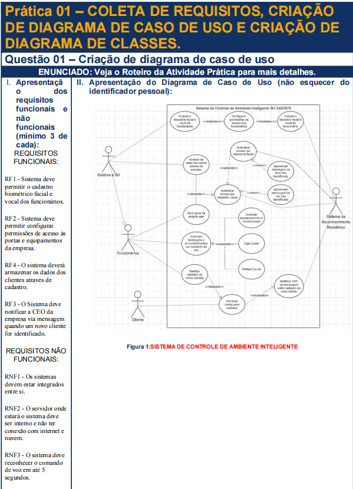
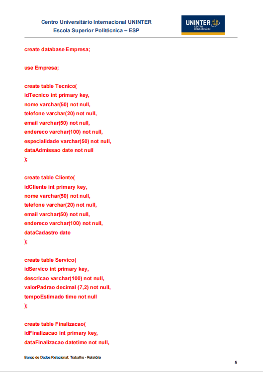
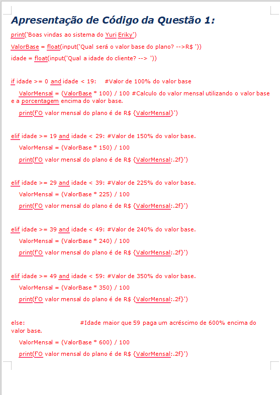

Trabalho envolvendo modelagem de dados e elaboração de diagramas para sistemas.
Visualizar PDF
Desenvolvimento de codigos utilizando MySQL para criação e manipulação de banco de dados.
Visualizar PDF
Trabalho resolvendo exercícios utilizando a linguagem python.
Visualizar Documento